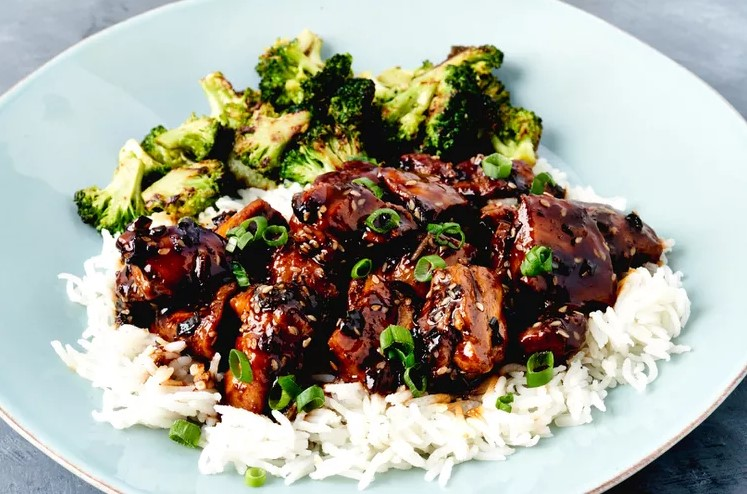

Chicken Teriyaki
This homemade teriyaki chicken recipe is quick and easy to make with chicken thighs.
The flavors of ginger, garlic, and sesame in the sticky sauce will surely hit the spot! Serve over hot rice.

Ingredients
- 1 cup low-sodium soy sauce
- 1/4 cup sake
- 3 tablespoons rice vinegar
- 1/3 cup brown sugar, or more to taste
- 1 tablespoon white sesame seeds
- 1/4 teaspoon crushed red pepper
- 2 teaspoons canola or peanut oil
- 1 teaspoon toasted sesame oil
- 1 teaspoon kosher salt
- 1/2 teaspoon freshly ground black pepper
- 2 pounds boneless skinless chicken thighs, cut into 1 ½ inch pieces
- 2 teaspoons grated fresh ginger
- 1 teaspoon finely minced garlic
- 1 bunch green onions, thinly sliced, divided
- 1 ½ cups cooked rice
Directions
Step 1
Combine soy sauce, sake, rice vinegar, and brown sugar in a bowl and whisk well until sugar is dissolved.
Stir in sesame seeds and crushed red pepper and set aside.
Step 2
Heat oils in a large skillet over high heat. Sprinkle salt and pepper evenly over chicken. Add chicken in a single layer to the
skillet and cook, undisturbed until chicken is
browned and releases easily from the pan, 4 to 6 minutes.
Flip chicken pieces, cook 1 more minute and remove from pan; set aside.
Step 3
Reduce heat to medium and add ginger and garlic. Cook, stirring constantly, until fragrant, about 1 minute.
Reserve 2 tablespoon of the green onions for garnish and add remaining green onions to the skillet. Cook for 1 minute.
Add 1 cup reserved soy sauce mixture to the skillet and stir with a wooden spoon, scraping up any browned
bits from the bottom of the skillet.
Bring mixture to a boil and cook until sauce has reduced by about a third or until slightly thickened and glossy.
Step 4
Return chicken to the skillet and cook, stirring occasionally, until sauce
is thickened slightly and chicken is coated in the sauce and cooked through.
Serve over rice and sprinkled with reserved green onions.